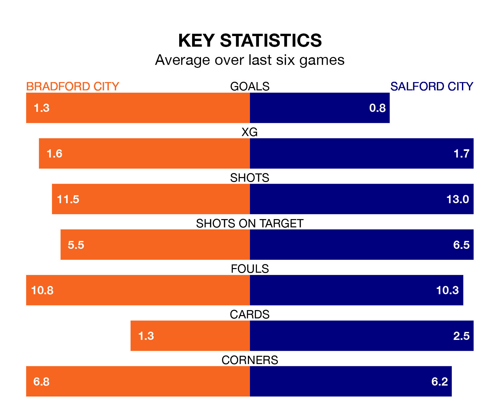

Struggling Salford City face Bradford City away at the University of Bradford Stadium on Tuesday looking to build on a win in their last league outing.
After securing all three points with a 1-0 victory over Crawley Town on January 13, the Ammies sit 21st in EFL League Two.
They travel to play a Bradford side 16th in the standings, who were held in their last match, 1-1 against Colchester United.
In the last 10 years, Bradford and Salford have played each other on nine occasions. Bradford won three of them, Salford five, and they drew once.
On average, the Bantams scored 0.8 goals and the Ammies 1.3 in those matches.
Their last meeting was on January 1 2023, when Bradford won 3-2 at home.
In Matt Smith, Salford have one of the league's most on-form strikers so far this season. He has notched 15 goals in 27 appearances, to sit third in the scoring charts.
His goal rate of one every 144 minutes is quicker than that of Andy Cook, Bradford's top scorer with a goal every 191 minutes, and a total of 11 goals in 24 games.
Bradford City are in disappointing form in EFL League Two, with one win and three draws from their last six games.
With a win and a draw over that period, Salford City's form is slightly worse – they have taken four points from 18, compared to the Bantams' six.
With 34 goals in 27 games so far this season, the home team are scoring at below the league average rate with 1.3 goals per game. But they are conceding fewer than average too, letting in 36 goals at a rate of 1.3 per game.
The Ammies are also below average scorers, with 1.3 goals per game, compared to a league average of 1.5. They have conceded 1.8 goals per game.
Tuesday's match will be refereed by Martin Woods, who has taken charge of seven EFL League Two games so far this season, issuing one red card and booking 22 players. He has awarded two penalties.
He is yet to oversee a match featuring either Bradford or Salford this season.
Updated: 09:18 (UTC), 23/01/24